Prevenir es vivir
1Objetivo
El objetivo de la existencia de un botiquín basico en los hogares es disponer de los elementos necesarios para tratar pequeñas heridas, dolencias leves.
2Beneficios
Un botiquín puede servirnos como primera medida de actuación urgente, pero si los síntomas persisten, o la lesión en caso de accidente es grave, se debe recurrir a la ayuda de un profesional.
3Elementos basicos
Cinta adhesiva para fijar gasas o vendajes. Tijera para cortar gasas y vendas. Antisépticos, yodo povidona, agua oxigenada o alcohol para prevenir infecciones.
Imagenes de algunos elementos que debe contener un botiquin
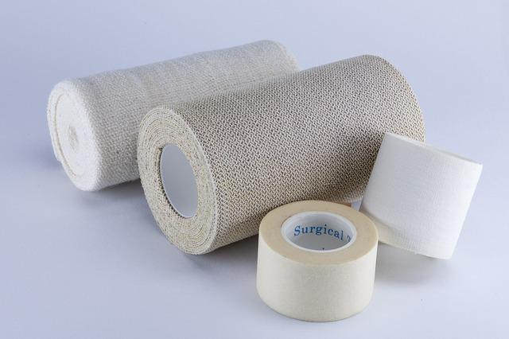
 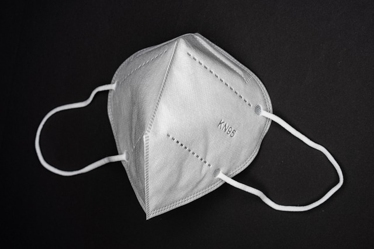
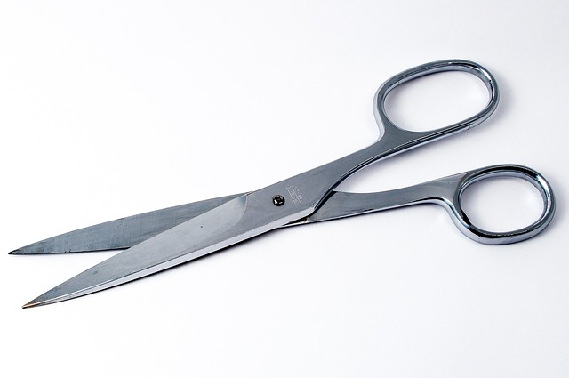
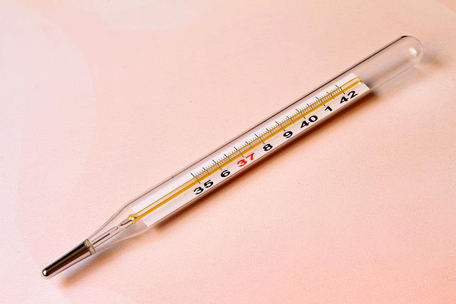
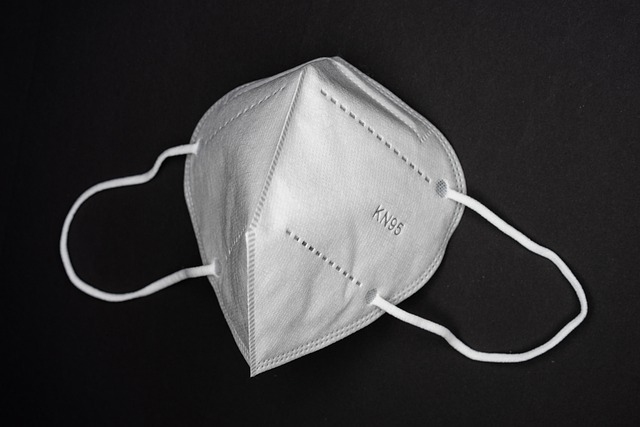
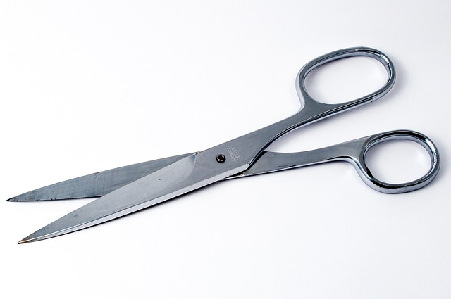
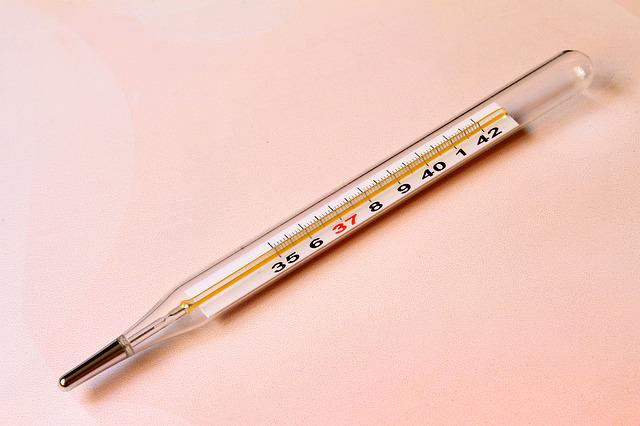
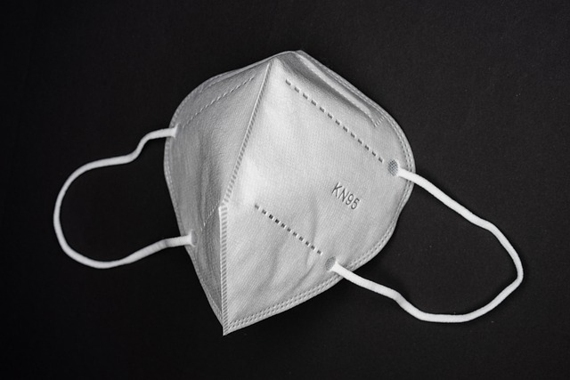
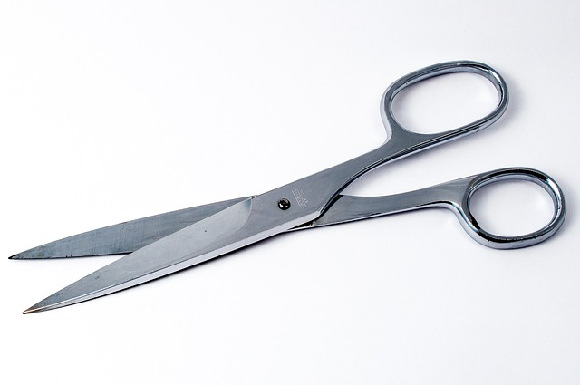
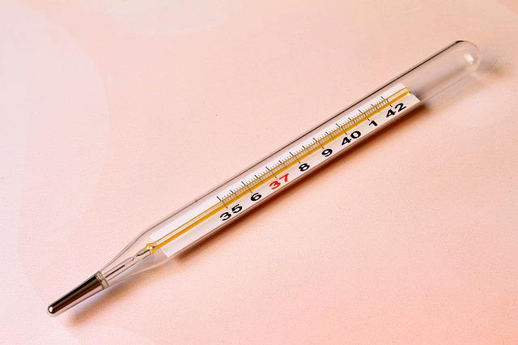
 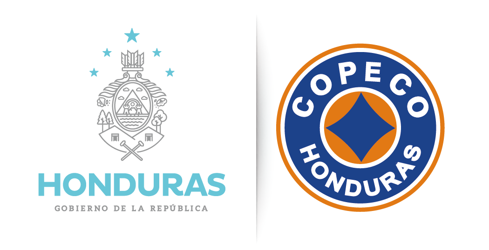
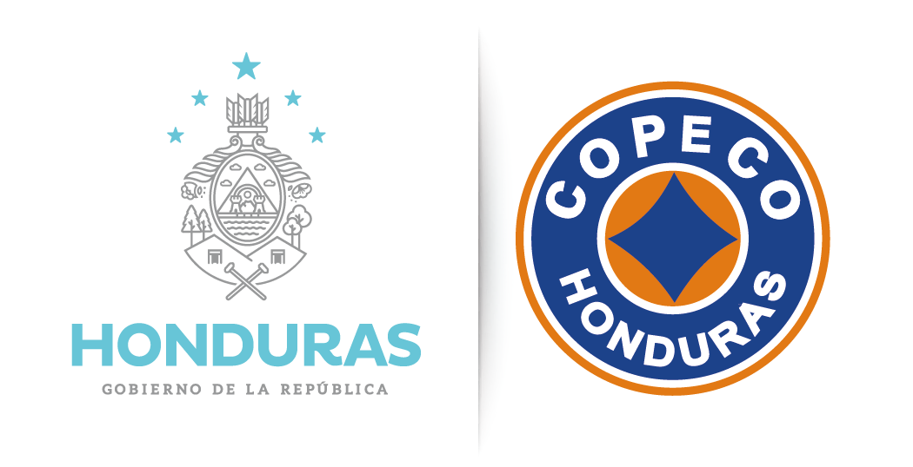
Usemos las medidas de Bioseguridad Covid-19
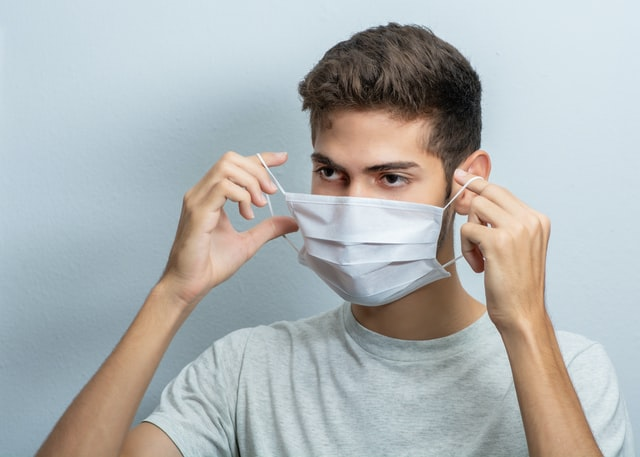
Mascarilla
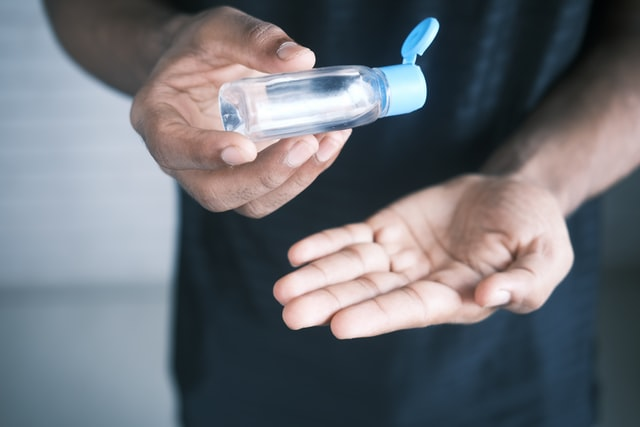
Gel
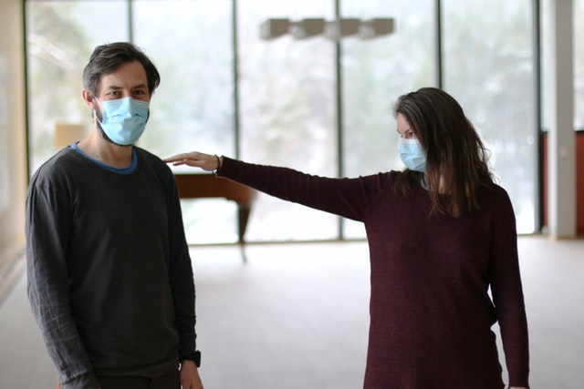